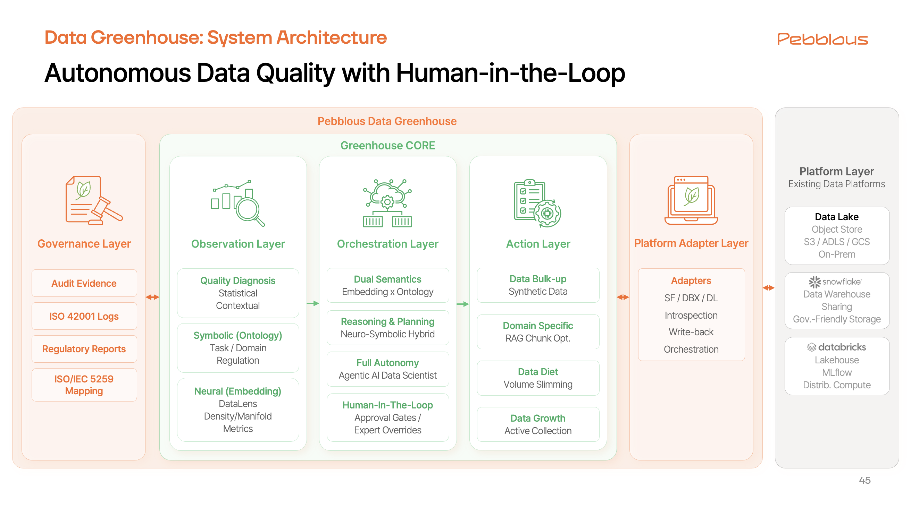

들어가며: 가트너 AI에게 페블러스를 묻다
페블러스는 가트너(Gartner)의 고객사로서 그들의 인사이트를 통해 시장을 읽고 전략을 수립해 왔습니다. 최근 가트너 서비스에 생성형 AI 기능(AskGartner)이 도입되었다는 소식을 접하고, 우리는 문득 궁금해졌습니다.
"가트너의 AI는 페블러스를 어떻게 알고 있을까?"
"데이터 품질 진단에서 합성 데이터 생성까지, 이 통합된 가치를 제공하는 또 다른 플레이어가 존재할까?"
그래서 우리는 가트너 AI에게 질문을 던져 봤고, 돌아온 답변은 꽤나 흥미로웠습니다. 가트너는 현재 시장의 스타트업들이 해결해야 할 핵심 과제(Challenge)로 '진단과 개선의 긴밀한 통합', '완전 자동화', '신뢰성 확보' 등을 꼽았습니다.
놀랍게도, 가트너가 제시한 '미래의 과제'들은 페블러스가 이미 해결했거나, 차세대 기술(AADS)을 통해 완성해 나가고 있는 것들이었습니다. 가트너가 "아직 시장에 드물다"고 평가한 그 기술적 난제들을 우리가 이미 넘어서고 있다는 사실은, 페블러스의 방향성이 틀리지 않았음을 재확인시켜 주었습니다.
1. 개요 (Executive Summary)
보고서 목적:
가트너(Gartner) AI와의 대화에서 도출된 시장의 핵심 과제와 피치북(PitchBook)의 2026 AI 전망을 토대로,
이에 대응하는 페블러스(Pebblous)의 AADS(Agentic AI Data Scientist) 고도화 전략의 시장 친화성을 확인합니다.
핵심 주제:
단순한 진단 도구(Tool)를 넘어, 데이터의 '관측-판단-행동-증명'을 자율적으로 수행하는
데이터 운영 체계(Data Greenhouse)로의 진화의 타당성을 확인합니다.
분석 범위:
가트너 AI와의 질의 응답 분석, 가트너 리서치(2025 TechScape), AADS 1단계 성과 및 2단계 목표, PitchBook 2026 AI 전망을 종합하여 분석합니다.
2. 2025년 시장 동향: "대전쟁의 서막"
2025년 AI 시장은 기술적 가능성을 탐색하는 단계를 지나, 실질적인 산업 적용과 생존을 위한 '대전쟁(The Great Competition Wars)' 국면으로 진입했습니다. 이제 시장은 단순한 모델 성능 경쟁을 넘어, 물리적 세계와 연결되는 피지컬 AI(Physical AI)와 데이터 주권을 강조하는 소버린 AI(Sovereign AI)로 중심축이 이동하고 있습니다. 이에 따라 AI의 성패를 좌우하는 핵심 요소로 '데이터 관리 소프트웨어'의 중요성이 그 어느 때보다 부각되고 있습니다.
2.1 주요 시장 트렌드
이 대전쟁 국면에서 세 가지 트렌드가 시장의 판도를 결정짓고 있습니다. 첫째, 피지컬 AI(Physical AI)가 디지털 챗봇을 넘어 제조, 로봇, 국방 등 물리적 세계와 상호작용하는 AI의 주류로 부상하면서, 현실 세계의 복잡한 변수(결함, 재난 등)를 반영한 고난이도 멀티모달 데이터 수요가 폭증하고 있습니다. 둘째, 데이터 안보와 기술 자립이 중요해지면서 외산 플랫폼 종속을 탈피하고 국산 파운데이션 모델과 온프레미스 환경을 선호하는 소버린 AI(Sovereign AI) 트렌드가 강화되고 있습니다. 셋째, AI 개발의 병목이 '모델'이 아닌 '데이터 품질'임이 명확해짐에 따라, 데이터 품질 관리 및 거버넌스 도구가 AI 생태계의 '곡괭이와 삽(Picks and Shovels)'으로 평가받고 있으며, 시장 규모는 2025년 $69.2B(약 100조 원)에 달할 전망입니다.
아래 차트는 2025년 AI 시장에서 각 트렌드의 중요도를 시각화한 것입니다. 데이터 관리 SW가 92점으로 가장 높은 중요도를 보이며, 페블러스의 타겟 시장인 피지컬 AI(85점)와 소버린 AI(75점)가 그 뒤를 잇습니다. 반면 AI 모델 자체의 성능 경쟁은 60점으로 상대적 중요도가 낮아지고 있습니다.
출처: 가트너 리서치, PitchBook 2026 AI 전망 종합 분석
-
피지컬 AI (Physical AI)의 부상 디지털 챗봇을 넘어 제조, 로봇, 국방 등 물리적 세계와 상호작용하는 AI가 주류로 부상하며, 현실 세계의 복잡한 변수(결함, 재난 등)를 반영한 고난이도 멀티모달 데이터 수요가 폭증하고 있습니다.
-
소버린 AI (Sovereign AI)로의 전환 데이터 안보와 기술 자립이 중요해지면서, 외산 플랫폼 종속을 탈피하고 국산 파운데이션 모델과 온프레미스(On-Premise) 환경을 선호하는 '소버린 AI' 트렌드가 강화되고 있습니다.
-
데이터 관리 소프트웨어의 중요성 AI 개발의 병목이 '모델'이 아닌 '데이터 품질'임이 명확해짐에 따라, 데이터 품질 관리 및 거버넌스 도구가 AI 생태계의 '곡괭이와 삽(Picks and Shovels)'으로 평가받고 있습니다. (시장 규모 2025년 $69.2B, 약 100조 원 전망)
2.2 가트너의 데이터 품질관리 시장 평가
가트너는 현재의 시장 상황을 단순한 합성 데이터 시장이 아닌, 진단(Diagnostics)에서 생성(Generation)을 아우르는 광의의 '데이터 품질 관리(Data Quality Management)' 시장으로 확장하여 평가하고 있습니다.
✅ 통합 추세
시장은 개별적인 진단(Profiling) 도구나 생성(Generation) 도구를 넘어, 이 둘을 결합하여 품질 문제를 원스톱으로 해결하는 통합 솔루션을 요구하고 있습니다.
⚠️ 한계점 지적
그러나 2025년 현재, 측정부터 수정(Remediation)까지 '완전 자동화'된 솔루션은 드물며, 합성 데이터에 대한 '신뢰(Trust)' 부족과 기존 시스템과의 '통합 마찰(Integration Friction)'이 주요 장벽으로 남아 있습니다.
3. 가트너의 4대 통합 패턴
가트너는 현재 '데이터 품질 관리' 시장의 스타트업들이 시도하고 있는 통합의 방향성을 크게 4가지로 분류했습니다. 페블러스는 이 중 "진단과 합성을 결합한(Paired)" 모델의 대표 사례로 언급되었습니다.
특히 주목할 점은, 경쟁사들이 주로 '테스트 데이터 관리'나 '단순 익명화'에 머무르는 것과 달리, 페블러스는 '진단을 통한 품질 개선'이라는 독자적인 영역을 구축하고 있다는 것입니다.
4대 패턴은 다음과 같습니다. ① 결합 서비스 모델은 데이터 품질을 먼저 진단하고 그 결과에 맞춰 필요한 데이터를 처방하는 방식으로, 가트너는 페블러스를 이 모델의 대표 사례로 명시했습니다. ② TDM + 합성 대체는 개인정보 보호를 위해 실제 데이터를 합성 데이터로 바꿔치기하는 방식입니다. ③ 도메인 특화 및 조립형 아키텍처는 금융이나 의료 같은 전문 분야에 특화된 데이터를 레고 블록처럼 조립하여 제공합니다. ④ 전문가 주도형 정제는 도메인 전문가가 데이터 생성 과정에 직접 개입하여 정교한 제어권을 갖는 방식입니다. 각 패턴의 상세 정의, 시장 한계, 그리고 페블러스만의 차별화된 대응 전략을 아래 탭에서 확인하세요.
마치 병원에서 진찰을 하듯 먼저 데이터의 품질을 진단(Diagnosis)하고, 그 결과에 맞춰 필요한 데이터를 처방(Generation)하는 방식입니다.
→ 가트너는 페블러스를 이 모델의 대표 사례로 명시
대부분 인력 기반의 '컨설팅 서비스' 형태에 머물러 있어 확장성(Scalability)이 부족함
AADS 자동화: '데이터 클리닉' 서비스를 AADS(자율형 에이전트) 기술을 통해 소프트웨어화하여, 전문가 없이도 진단-처방-개선이 가능한 완전 자동화(Full Automation) 모델로 진화시킴
Data Greenhouse: 일회성 품질 진단이 아닌, 진단-개선 싸이클을 지속적으로 지원하는 데이터 운영 체계로 격상
4. Data Greenhouse로의 도약
페블러스는 AADS 1단계 연구개발 성과를 발판으로, 2025년 이후 시장을 선도할 '데이터 그린하우스(Data Greenhouse)' 체계를 완성합니다. 이는 단순한 도구가 아니라, 기존 데이터 플랫폼(Snowflake, Databricks 등) 위에 얹혀져 데이터 운영의 책임을 지는 '책임 레이어(Responsibility Layer)'입니다.

4.1 핵심 개념: 자율 순환 루프
Data Greenhouse는 "관측(Observe) – 판단(Orchestrate) – 행동(Action) – 증명(Govern)"의 4단계 루프를 통해 데이터가 스스로 진단하고 치료하여 성장하는 무인화 시스템을 구현합니다.
이 순환 루프를 구성하는 각 계층의 역할은 다음과 같습니다. 맨 아래 Platform Adapter Layer는 데이터 이동을 최소화하면서 Snowflake, Databricks 등 기존 플랫폼의 신호(메타데이터, 비용, 로그)를 관찰하고 개선 결과를 다시 반영(Write-back)하는 접점 역할을 합니다. Observation Layer는 Neural(임베딩)로 데이터의 과밀과 공백을 시각화하고, Symbolic(온톨로지)로 맥락과 규제 위험을 해석합니다. Orchestration Layer(AADS)는 진단 결과를 바탕으로 계획을 수립하고, Human-in-the-Loop 승인 게이트를 통해 자율성과 통제의 균형을 조율합니다. 마지막으로 Governance Layer는 ISO/IEC 5259 및 ISO 42001 표준에 기반한 품질 매핑과 감사 로그를 운영 파이프라인에 내장하여 '증적 자동화'를 구현합니다.
순환
특히 데이터의 품질을 개선하는 Action Layer는 다음과 같이 세분화된 전략을 수행합니다:
🥗 Data Diet
중복 데이터를 제거하여 비용 절감 및 학습 효율 최적화
💪 Data Bulk-up
GenQA/Gen-VLM으로 텍스트 및 시각적 엣지 케이스를 합성하여 추론 강건성 확보
🛡️ Data Replica
통계적 섭동으로 원본의 특성은 유지하되 식별 위험을 완벽히 제거한 복제 데이터 생성
🎯 RAG Optimization
지식 베이스의 의미적 중복을 제거하고 커버리지를 확장하여 검색 정확도 최적화
4.2 5계층 아키텍처
Data Greenhouse의 네 단계 순환 루프는 5개의 레이어로 구성됩니다. 맨 아래 Platform Adapter Layer는 데이터 이동을 최소화하면서 Snowflake, Databricks 등 기존 플랫폼의 신호(메타데이터, 비용, 로그)를 관찰하고 개선 결과를 다시 반영합니다. Observation Layer는 Neural(임베딩)로 데이터의 과밀과 공백을 시각화하고, Symbolic(온톨로지)로 맥락과 규제 위험을 해석합니다.
Orchestration Layer는 AADS가 진단 결과를 바탕으로 계획을 수립하고, Human-in-the-Loop 승인 게이트를 통해 자율성과 통제의 균형을 조율합니다. Action Layer는 위에서 설명한 Diet, Bulk-up, Replica, RAG 최적화를 실행합니다. 마지막으로 Governance Layer는 ISO/IEC 5259 및 ISO 42001 표준에 기반한 품질 매핑과 감사 로그를 운영 파이프라인에 내장하여 '증적 자동화'를 구현합니다.
각 레이어를 클릭하여 상세 내용을 확인하세요.
Data Bulk-up: GenQA/Gen-VLM으로 엣지 케이스 합성
Data Replica: 통계적 섭동으로 안전한 복제 데이터 생성
RAG Optimization: 지식 베이스의 의미적 중복 제거 및 커버리지 확장
Symbolic(온톨로지): 맥락과 규제 위험을 해석하여 단순 통계를 넘어선 깊은 진단을 수행합니다.
4.3 주요 기술 목표 (AADS 2단계)
페블러스는 AADS 1단계 사업 성과를 바탕으로, 2025년 이후 데이터 그린하우스를 통해 시장을 선도하기 위한 AADS 2단계의 3가지 핵심 기술 목표를 설정했습니다. 첫째, 텍스트를 넘어 도면, 차트, 결함 이미지를 해석하고 인과관계를 추론하는 산업 특화 멀티모달 VLM을 개발합니다. 둘째, 난이도에 따라 sLLM과 거대 모델을 자동 분배하는 Reasoning Router로 추론 비용을 70% 절감합니다. 셋째, 데이터 반출이 불가능한 국방/공공 시장을 위한 온프레미스 패키지를 완성하여 소버린 AI 수요에 대응합니다.
5. 시장의 난제 vs 페블러스의 해답
가트너는 현재 데이터 품질관리 시장의 4대 통합 트렌드에 이어 3대 기술 난제로 '완전 자동화된 품질개선의 부재', '검증 및 신뢰 부족', '기술 격차 및 통합 마찰'을 지목했습니다. 페블러스는 상기 AADS 핵심 기술들을 통해 이 난제에 대한 명확한 솔루션을 제시합니다.
특히 Agentic AI에 의한 '완전 자동화'가 가질 수 있는 위험성을 'Human-in-the-Loop' 구조로 보완하여 신뢰성을 확보한 점까지 제시합니다. 아래 표는 각 난제에 대한 페블러스의 대응 전략을 정리한 것입니다.
| 시장의 난제 | 페블러스 솔루션 |
|---|---|
|
1. 완전 자동화된 품질개선의 부재
No Automated Remediation
|
Cycle-Loop 아키텍처: 진단 리포트에서 멈추지 않고, AADS가 직접 삭제(Diet)하고 생성(Bulk-up)하는 Action Layer를 통해 수정까지 완전 자동화 구현 |
|
2. 검증 및 신뢰 부족
Lack of Validation & Trust
|
Standard-Inside & HITL: ISO/IEC 5259 표준 내재화로 품질을 정량화하고, 승인 게이트(Human-in-the-Loop)를 통해 중요한 변경 사항을 전문가가 검토하게 하여 시스템 신뢰성 확보 |
|
3. 기술 격차 및 통합 마찰
Skill Gaps & Friction
|
자연어 인터페이스 & 어댑터: 복잡한 코딩 없이 자연어 명령으로 제어하며, Platform Adapter로 기존 레거시 시스템 위에 즉시 설치 가능 |
6. 결론: 핵심 기록 시스템으로의 진화
가트너 AI와의 대화는 페블러스가 가고 있는 길이 '미래의 표준'임을 확인시켜 주었습니다. 페블러스 Data Greenhouse는 단순한 데이터 품질 측정 도구를 넘어, 기업의 AI 데이터 자산을 관리하고 그 품질을 증명하는 필수적인 '핵심 기록 시스템(System of Record)'으로 진화하고 있습니다.
Data Greenhouse의 핵심 가치는 세 가지로 요약됩니다. 첫째, 기존 데이터 플랫폼(Snowflake, Databricks 등)을 대체하지 않고 그 위에서 비용, 성능, 규제에 대한 책임을 지는 운영 체계로 포지셔닝합니다. 둘째, Neuro-Symbolic AI의 강력한 자율성 위에 Human-in-the-Loop 통제 장치를 결합하여, 엔터프라이즈가 안심하고 도입할 수 있는 현실적인 자동화를 제공합니다. 셋째, 피지컬 AI와 소버린 AI라는 고난이도 시장의 요구사항(안전, 보안, 품질)을 충족하며, 2026년 이후 "AI 대전쟁 시대"의 승자가 되기 위한 준비를 마쳤습니다.
플랫폼 위의 책임 레이어
기존 데이터 플랫폼을 대체하는 것이 아니라, 그 위에서 비용, 성능, 규제에 대한 책임을 지는 운영 체계(OS)
자율성과 통제의 조화
Neuro-Symbolic AI의 강력한 자율성 위에 Human-in-the-Loop 통제 장치를 결합한 현실적인 자동화
고신뢰 시장 장악
피지컬 AI와 소버린 AI라는 고난이도 시장의 요구사항(안전, 보안, 품질)을 충족
2026년 이후 "AI 대전쟁 시대"의 승자가 되기 위한 준비를 마쳤습니다.